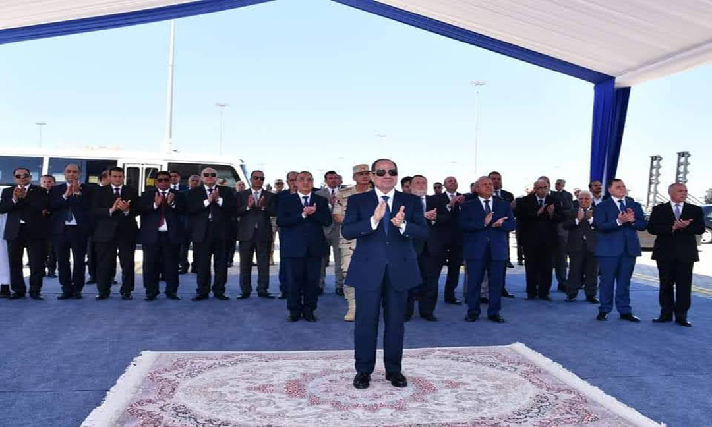

-
 President El-Sisi Witnesses the Inauguration of "Tahya Misr" Multi-Purpose Terminal at Alexandria Grand Port
President El-Sisi Witnesses the inauguration of "Tahya Misr" multi-purpose terminal at Alexandria grand port, and Raising the Flag on the Valley of the Kings, the largest and most modern ship of the Egyptian merchant fleet, as part of Egypt's plan to transform into a global logistics and commercial center. (quoting from the Egyptian Ministry of Transport's page) …
-

The Minister of Transport inspects the Tahya Misr station and the Valley of the Kings ship before the presidential inauguration
Lieutenant General Engineer Kamel Al-Wazir, Minister of Transport, visited this morning, Tuesday, the ship WADIALMOLOUK, the Valley of the Kings ship belonging to the National Navigation Company, one of the companies of the Ministry of Transport, which has joined the company’s fleet this year.… .…
-

Damietta Port honors a number of distinguished female cadres in the authority’s departments
Coinciding with the International Women's Day in the Maritime Sector, Damietta Port honors a number of distinguished female cadres in the authority's departments …
-
.jpg)
President Abdel Fattah El-Sisi President of the Republic Holds Meeting with Prime Minister and Minister of Transport
President Abdel Fattah El-Sisi held a meeting today with Prime Minister Dr. Mostafa Madbouly and Minister of Transport, Lieutenant General Kamel El-Wazir. (Quoting from the Maritime Transport Sector page) …
-

Prime Minister follows up on the implementation rates of a number of projects being implemented in Alexandria and Dekheila ports Within the implementation plan of the Grand Port of Alexandria
After completing the inspection of a number of service projects in the governorate, Dr. Mostafa Madbouly, Prime Minister, went to follow up on the implementation rates of a number of projects being implemented in Alexandria and Dekheila ports, which are being implemented within the implementation plan of the Grand Port of Alexandria and the development of all Egyptian ports (Quoting from the page of the Egyptian Ministry of Transport) …
-

The best conference to support excellence and creativity in the field of maritime transport under the patronage of the Minister of Transport
The maritime transport sector, in cooperation with 2B Studios Media Company, organized in the new City of Alamein the best conference in its first edition to support excellence, creativity, and innovation in the field of maritime transport. In the presence of Dr. Ismail Abdel Ghaffar, President of the Arab Academy for Science, Technology and Maritime Transport (AASTMT), the Chinese consul and the Saudi and Chinese commercial attachés, and with the participation of a number of leaders of maritime transport, shipping agencies, logistical support, customs and the private sector. (Quoting from the Maritime Transport Sector page) …